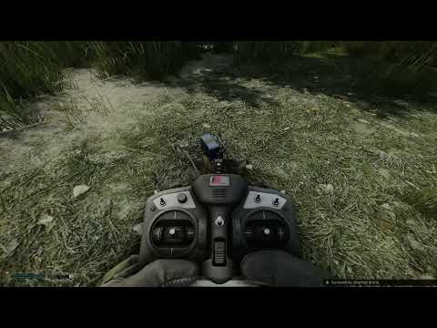
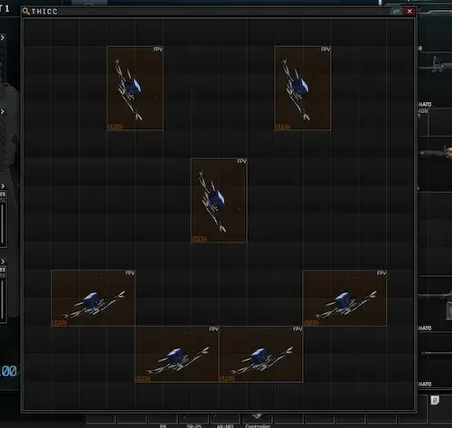
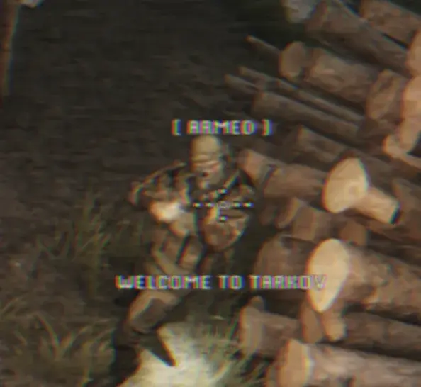

FPV Drone Mod
- Downloads
- 23,707
- Favourites
- 53
- Mod lists
- 99
Introduction
This mod adds a controllable FPV Kamikaze Drone to THE CITY.
The FPV drone, required controller and headset are available from Skier. Better payloads become available at higher trader levels. The "Sova" night vision module can be bought from Mechanic, while the Iridium thermal vision module can be used for thermal vision.
This mod is extremely experimental, please report issues and provide logs if possible.
Project board: https://github.com/users/peinwastaken/projects/3/views/2
Controls
The general control scheme looks something like this:
General:
Show list of active drones (with Radio Controller): RightMouse
Start piloting (with Radio Controller): LeftMouse
Keyboard (Drone):
Apply throttle - W
Yaw left/right - A/D
Pitch up/down - UpArrow/DownArrow
Roll clockwise/counter-clockwise - RightArrow/LeftArrow
Toggle armed - K
Exit drone view - Backspace
Controller (Drone):
Left stick up - Throttle
Left stick left/right - Yaw
Right stick up/down - Pitch
Right stick left/right - Roll
Toggle armed - Y
Exit drone - B
Controls for keyboard and mouse can be changed in F12 for both the FPV and Recon drones. The mod also supports XInput, which means it has controller support.
Preview

Installation
Drag and drop.

Thanks
Massive thank you to:
- GrooveypenguinX - for helping with some technical questions, without which this mod wouldn’t have been possible
- Tron - for creating the controller and headset containers
- Eco and Pigeon - for sourcing the assets
- tarkin - for sending the BTR model which saved me 700 years of work
- TacticalToaster - helping with BigBrain
- Dar’Zhar, TheManWhoSoldTheWorld for sending me clips to use for the preview… which I didn’t end up using… whatever. Thanks anyway!
- Anyone else I may have forgotten, sorry…
- You for checking out the mod
Known Issues
- Drones are amphibious
- Could be a NullReferenceException hiding somewhere, let me know if you find any.
Version
0.7.0
small surprise incoming for fika friends…
Fika sync now available HERE!
- Made drones compatible with item and weapon cases (both thicc and regular)
- Added payload properties. every payload now has its own explosion radius, damage, and more. As such I have now removed explosion settings from the client config
- Added drone kill attribution
- Drone audio is now affected by your EFT volume settings
- Added a bunch of new custom locale strings
- Recon drone should hopefully not try to escape your vicinity anymore when redeploying it
- Fixed an issue where the goggle mask would disappear after drone explosion
- Fixed a couple of issues with thermal and night vision re-applying after drone explosion
- Miscellaneous client plugin changes for fika sync compatibility
let me know if anything is broken!

Dependencies
Version
0.6.0
- Added a new overlay for goggles while not piloting a drone. For realism purposes. And stuff.
- Fixed the ability to modify drones in-raid
- Fixed BTR death state not working correctly on different maps
- Fixed world disappearing when drone was destroyed (or culling was toggled in general)
- Fixed an issue where rendering would break if a drone was destroyed without the player previously not piloting it
- …and several other minor bug fixes. Which I’ve forgotten about… its been so long!
- (currently unused) Added systems for electronic warfare/signal jamming
p.s. for all the recon drone connoisseurs: your drones will still fly away when redeploying them. ill address this next update, but until then please land them properly
Dependencies
Version
0.5.0
IF UPDATING PLEASE DELETE THE SERVER MOD! Because the file structure has slightly changed.. sry
- Added payloads for the FPV drone
- Fragmentation - regular explosive payload with manual arming
- Airburst - explosive payload that explodes as soon as its armed
- HEAT - explosive anti-tank payload with manual arming
- Added the ability to blow up the BTR. There are consequences. Consequences can be toggled in the client config (F12)
- Having a controller plugged in no longer disables keyboard inputs
- Adjusted item prices and availability. Work is always ongoing on that front
- Updated item bundles. They will look either better or worse. idk im not an asset guy
- Various other bugfixes and changes
a lot has changed, let me know if there are issues
Dependencies
Version
0.4.0
IF UPDATING PLEASE DELETE ORIGINAL FILES! FILE STRUCTURE HAS CHANGED
- Added
Reconnaissance Drone - Added thermal and night vision modules for recon and fpv drones
"Sova" night vision moduleavailable from Mechanic LL2 (currently missing a custom model, will come later)- Thermal vision uses the
Iridium military thermal vision module
- Added customizable text (watermark?) for the kamikaze drone. Must be manually set in client config (F12)
- Added the ability to select between multiple drones with the controller (Right click)
- Controller can now be placed in special slots as was previously intended but… whatever doesnt matter
- Various fixes and other smaller or bigger changes.. some of which I may have forgotten about
let me know if there are issues!!! and stuff!!!

Dependencies
Version
0.3.1
- Fixed a silent, sneaky and very hidden
nullrefthat caused bots to become unresponsive.
Yeah…
Dependencies
Version
0.3.0
REQUIRES BIGBRAIN ~1.4.0
- Added BigBrain support, bots will now attempt to evade and shoot down incoming drones. Currently it’s fairly basic but will be improved over time
- Added mouse input with config options
- Added option to disable culling while piloting drones. Can be toggled in BepInEx config
- Added drone camera angle offset
- Added config options to configure explosion parameters
- Miscellaneous small fixes here and there
Dependencies
Version
0.2.0
- Fixed
Collection was modifiederror while having other Commonlib-dependent mods installed - Added basic controller support (tested with a Xbox One controller, but theoretically any XInput controller should work)
- Misc. small tweaks
Controller controls:
Left stick up - Throttle
Left stick left/right - Yaw
Right stick up/down - Pitch
Right stick left/right - Roll
Toggle armed - Y
Exit drone - B
Dependencies
Version
0.1.0
Initial release